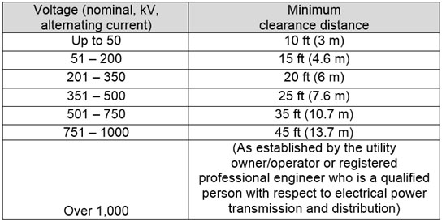

11.F Operations Adjacent to Overhead Lines
11.F.01–11.F.09
11.F.01 Overhead transmission and distribution lines shall be carried on towers and poles that provide safe clearances over roadways and structures.
- Clearances shall be adequate for the movement of vehicles and for the operation of construction equipment.
- All electric power or distribution lines shall be placed underground in areas where there is extensive use of equipment having the capability to encroach on the clearance distances specified in Section 11.E.03. For voltages greater than 600, reference NESC for required clearance distance.
- Protection of outdoor trolleys and portable cables rated above 600 volts for supplying power to moveable construction equipment such as gantry cranes, mobile cranes, shovels, etc., shall conform to NESC.
11.F.02 Work activity adjacent to overhead lines shall not be initiated until a survey has been made to ascertain the safe clearance from energized lines. > See Section 11.A.02.
11.F.03 Any overhead wire shall be considered energized unless the person owning such line or operating officials of the electrical utility supplying the line certifies that it is not energized and it has been visibly grounded and tested.
11.F.04 Operations adjacent to overhead lines are prohibited unless at least one of the following conditions is satisfied:
- Power has been shut off and positive means taken to prevent the lines from being energized;
- Equipment, or any part of the equipment, does not have the capability of coming within the minimum clearance from energized overhead lines as specified in Table 11-1, OR the equipment has been positioned and blocked to assure no part, including cables, wire rope, components and attachments, can come within those clearances; AND a notice of the minimum required clearance has been posted at the operator's position;
- Electric line trucks and/or aerial lifts used for working on energized overhead lines must meet the requirements of OSHA 1910.269 and Table 11-I.
▸Note: Cranes and other equipment (excavators, forklifts, etc) used to hoist loads with rigging: Equipment operations in which any part of the equipment, load line, or load (including rigging and lifting accessories) is closer than the minimum approach distance in Table 11-1 to an energized power line is prohibited, except as allowed in Section 16.G.12. > See 16.G.12 and Table 16-2.
11.F.05 Work activity that could affect or be affected by overhead lines shall not be initiated until coordinated with the appropriate utility officials.
11.F.06 Standard emergency communication procedures shall be established and rehearsed to assure rapid emergency shutdown for all work being conducted on overhead power lines.
11.F.07 Floating plant and associated equipment shall not be sited or placed within 20 ft (6 m) of overhead transmission or distribution lines.
11.F.08 Cage boom guards, insulating links, or proximity warning devices may be used on cranes, but such devices shall not alter the requirements of any other regulation of this part, even if such device is required by law or other regulation. Insulating links shall be capable of withstanding a 1 minute dry low frequency dielectric test of 50,000 volts AC.
TABLE 11-1
Minimum Clearance from Energized Overhead Electric Lines

Note: All dimensions are distances from live part to equipment and components at any potential reach.
11.F.09 Induced currents.
- Before work near transmitter towers where there is potential for an electrical charge to be induced in equipment or materials, the transmitter shall be de-energized or tests shall be conducted to determine if an electrical charge could be induced.
- The following precautions shall be taken to dissipate induced voltages:
- The equipment shall be provided with an electrical ground to the upper rotating structure supporting the boom; and
- Ground jumper cables shall be attached to materials being handled by boom equipment when electrical charge could be induced while working near energized transmitters. Crews shall be provided with nonconductive poles having large alligator clips or other similar protection to attach the ground cable to the load and insulating gloves will be used.
{kind=link}